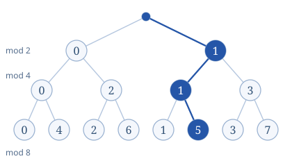

Algebraic geometry
Geometric spaces defined by polynomial equations, and the language of schemes that brings them together.
Jingyi Huang · Mathematics
My mathematical interests lie in algebraic geometry, arithmetic geometry, number theory, and p-adic geometry.
One question connects these interests: how does the geometry of a polynomial equation change when we look for its solutions in different number systems?
Explore my interests
Geometric spaces defined by polynomial equations, and the language of schemes that brings them together.
The meeting of algebraic geometry and number theory, with arithmetic questions viewed geometrically.
Numbers, arithmetic structures, and the relationships between local and global perspectives.
Geometry over p-adic fields, where non-Archimedean ideas offer a different view of space.
A collection of freely available mathematical course notes.
My public profile is @nicolashung792 on GitHub.